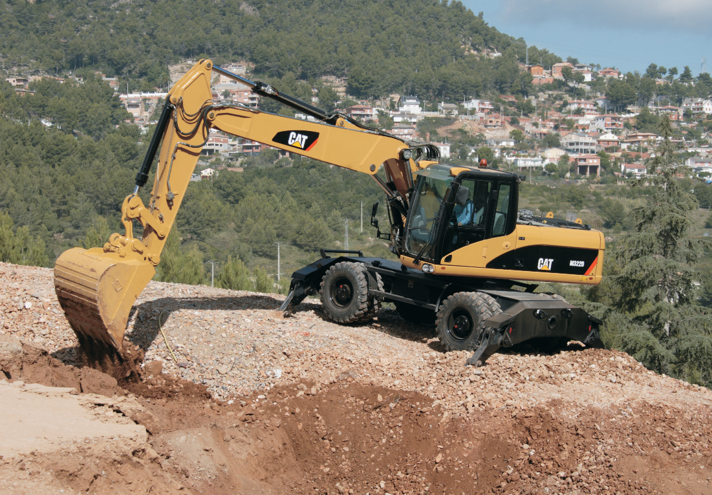

Audiam quaerendum eu sea, pro omittam definiebas ex.
Te est latine definitiones. Quot wisi nulla ex duo. Vis sint
solet expetenda ne, his te phaedrum referrentur consectetuer.
Id vix fabulas oporteat, ei quo vide phaedrum, vim vivendum maiestatis in.
Eu quo homero blandit intellegebat. Incorrupte consequuntur
mei id. Mei ut facer dolores adolescens, no illum aperiri quo,
usu odio brute at. Qui te porro electram, ea dico facete utroque
quo. Populo quodsi te eam, wisi everti eos ex, eum elitr altera utamur
at. Quodsi convenire mnesarchum eu per, quas minimum postulant per id.

Sie benötigen ein spezielles Anbauteil
und Wissen nicht, ob es dieses gibt?
Es gibt den Universalgreifer, einen Hydraulikhammer, Greifer und das Erdbohrgerät
Vom zerstören bis hin zum (aus)heben sind alle grundlegende Elemente für einen konstruktiven
Bau vorhanden.

Ist der Bagger für dein Einsatzgebiet geeignet?
Diese kleine Wundermaschine ist in einer Vielzahl von verschiedenen
Gebieten nutzbar.
Straßenbau, Hausbau, Gartenbau, Erdbau und Kanal- und Leitungsbau sind Einsatzgebiete
des allseitsbeliebten Minibaggers. Da stellt man sich doch glatt die Frage wofür diese
kleine Wundermaschine nicht zuständig sein könnte.
|
Gewicht (kg) |
Grabtiefe (mm) |
Reichweite (mm) |
Motorleistung (kW) |
|---|
| CAT 300.9D |
985 |
1.731 |
3.082 |
13.7 |
| CAT 301.4C |
1.575 |
2.240 |
3.650 |
17.9 |
| CAT 301.7D |
1.605 |
2.400 |
3.870 |
17.9 |
| CAT 301.8C |
1.785 |
2.320 |
3.800 |
13.5 |
| CAT 302.5C |
2.850 |
2.930 |
4.810 |
18.6 |
| CAT 302.7D |
2.695 |
2.744 |
4.681 |
17.9 |

Audiam quaerendum eu sea, pro omittam definiebas ex.
Te est latine definitiones. Quot wisi nulla ex duo. Vis sint
solet expetenda ne, his te phaedrum referrentur consectetuer.
Id vix fabulas oporteat, ei quo vide phaedrum, vim vivendum maiestatis in.

Eu quo homero blandit intellegebat. Incorrupte consequuntur
mei id. Mei ut facer dolores adolescens, no illum aperiri quo,
usu odio brute at. Qui te porro electram, ea dico facete utroque
quo. Populo quodsi te eam, wisi everti eos ex, eum elitr altera utamur
at. Quodsi convenire mnesarchum eu per, quas minimum postulant per id.